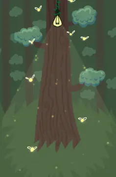
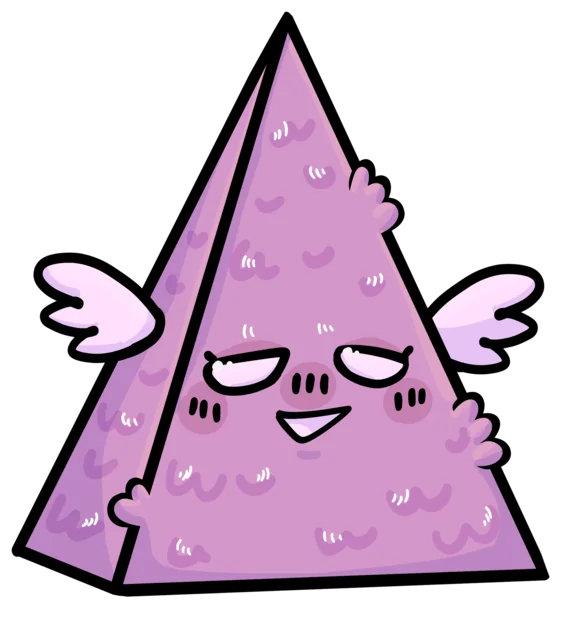
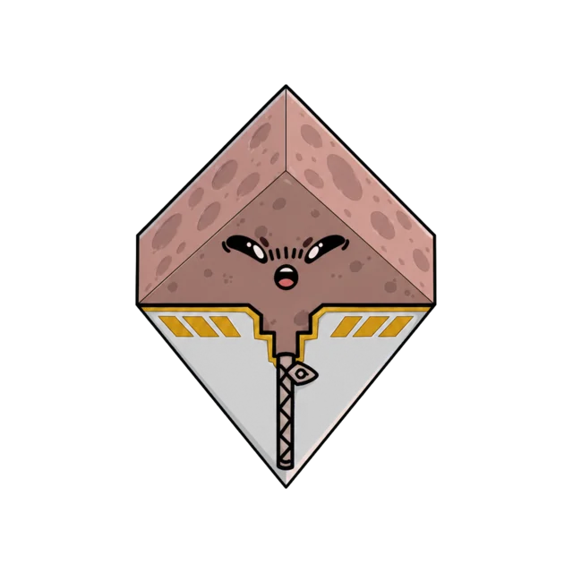
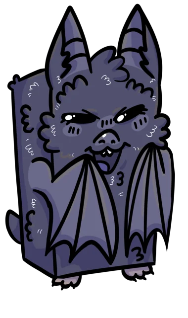

Ball is God?! Ruota la torre. Diventa l'impatto.
Un arcade hardcore a discesa verticale in cui il trascinamento orizzontale fa ruotare la torre attorno a Espa che cade. Salta gli atterraggi sicuri, carica un combo smash e sfonda un mondo mitico in cui un solo colpo non parato mette fine alla partita.
Produzione attiva: dieci scene di luoghi, boss, dialoghi ramificati e percorsi di karma che cambiano le regole del gioco.
Ruotatrascina la torre attorno a Espa
Rischiosalta tre atterraggi sicuri
Smashsfondare la piattaforma
All'interno della build attuale
Il karma cambia più del dialogo.
I percorsi di karma chiaro, neutro e oscuro cambiano il comportamento dello scudo, i segnali di avvertimento, l'aggressività dei nemici e le fasi dei boss, così la storia cambia il modo in cui giochi.
Stato della build Produzione attivaTutti e dieci i mondi dialoganti
Sfondi dei dialoghi per tutti e dieci i mondi, in ordine di discesa da Ena a Deka.





Interfaccia utente della produzione attuale
Selezione dei livelli, dialoghi e schermate dei risultati nella build attuale.
Questo è il flusso attuale nell'ordine in cui lo incontri: selezione del livello, dialogo, una scelta importante, poi la vittoria o una schermata di sconfitta separata. Ogni immagine qui sotto usa la grafica del progetto Unity di produzione.
Il percorso celeste seleziona i livelli generati in dieci capitoli da 100 livelli.
Il menu di produzione mappa dieci luoghi in capitoli da 100 livelli e si apre direttamente nella partita selezionata.

 201
201Il dialogo avviene dentro il luogo.
Il ritratto del personaggio, l'illustrazione del luogo e la targhetta di chi parla condividono un unico riquadro verticale.


Shash
Procedi, allora, ma non pensare che sarà facile. Trial ti aspettano e faranno sembrare tutto quello che hai fatto prima una sciocchezza.
04 / Scelta della pietra miliare
La risposta diventa parte della discesa.
Ai livelli locali 90 e 100, il pannello dedicato richiede una decisione tra risparmiare o uccidere prima che il dialogo risolva la partita.

Risparmia
Uccidi
05 / Menu dei risultati
La vittoria continua. La sconfitta ritorna alla stessa sfida.
La build attuale ha due schermate di risultato separate: PanelWin offre l'opzione per rigiocare e il livello successivo, mentre PanelOver mantiene un'unica e inconfondibile azione per rigiocare.
Vittoria · PanelWin
Discesa completata
 Rigioca
Avanti
Rigioca
Avanti
Rigioca
Avanti
Cast di dialoghi
Volti incontrati durante la discesa.
Tutti i 25 personaggi con coppie valide di ritratti di produzione con espressione aperta e chiusa sono inclusi qui sotto. Passa il mouse o seleziona una scheda per cambiare espressione.











Panoramica del gioco
Ball is God?! è un arcade hardcore sulla caduta attraverso una torre rotante.
L'idea
Guida Espa lungo una torre divina. Un solo errore può chiudere la partita, e le tue scelte importanti cambiano il modo in cui il mondo si gioca.
Build attuale
Sono implementati dieci scene di luoghi, la generazione procedurale delle torri, il combo smash, lo scudo con swipe, le configurazioni dei boss, i dialoghi ramificati, i menu di produzione e i ritratti pronti per le espressioni.
Pubblico
Giocatori a cui piacciono gli arcade mobile impegnativi, il timing rischio-ricompensa e i boss, con una storia da seguire.
Stato
Produzione attiva. Il lavoro recente riguarda i sistemi di runtime, l'arte dei mondi, i test e come il gioco funziona su un telefono.
Caratteristiche
Cosa fai in Ball is God?!
Discesa trascinando per ruotare
Il trascinamento orizzontale fa ruotare la torre attorno a Espa che cade automaticamente, allineando varchi, pericoli e piattaforme sicure.
Pressione arcade hardcore
Un solo colpo non parato chiude la partita, quindi devi leggere la torre e calcolare i tempi di ogni mossa.
Boss e mondi mitici
Dieci scene di luoghi, ognuna con i propri boss, portano la storia da un mondo al successivo.
Scelte che cambiano le regole
Misericordia, forza e karma cambiano i dialoghi, le regole dello scudo, l'aggressività dei nemici, i segnali di attacco e le fasi dei boss.
Ciclo di gioco
Come giocare a Ball is God?!
- Passaggio 01Leggi la discesa
Scruta le prossime piattaforme, i vuoti e i pericoli e cerca finestre di tempo sicure mentre cadi.
- Passaggio 02Ruota la torre
Il trascinamento orizzontale fa ruotare il mondo attorno a Espa, allineando una piattaforma sicura o un varco voluto.
- Passaggio 03Rischia e distruggi
Salta tre piattaforme per caricare un combo smash, quindi sfonda le strutture mentre lo scudo copre un errore letale.
- Passaggio 04Scegli la conseguenza
La misericordia e la forza modellano il karma, il dialogo e le regole di gioco applicate ai nemici e ai boss.
Storia/mondo
Una torre mitica in cui le tue scelte ti seguono nella discesa.
Ball is God?! nasce dalla passione fin da bambino per i giochi arcade mobile a discesa verticale: leggere i varchi, reagire rapidamente e sopravvivere d'istinto.
Il formato poteva reggere di più: boss, personaggi con personalità, una storia e tensione morale. Il progetto attuale segue Espa attraverso dieci scene di luoghi e un cast di strani personaggi, con scelte che cambiano sia la storia sia il gioco.
Così l'obiettivo è diventato un semplice arcade a discesa verticale, con la pressione di uno scontro con un boss e le conseguenze di un RPG guidato dalla storia.
- Visione
- Un arcade con torre rotante e una storia mitica
- Ambito attuale dei mondi
- Dieci luoghi e configurazioni dei boss
- Fase della storia
- Bozza completa di una storia di lunga durata
- Stato di produzione
- Produzione attiva
In breve
Semplici controlli a trascinamento, con una storia che cambia le regole.
I controlli a trascinamento per ruotare sono immediati. Il resto viene dai mondi mitici, dai boss e dalle scelte che cambiano il gioco.
La build attuale combina già generazione deterministica della torre, smash a rischio e ricompensa, fallimento con un solo colpo, boss, dialoghi ramificati e un karma che cambia il gameplay.
- Genere
- Arcade a discesa verticale guidato dalla storia
- Piattaforma di destinazione
- iOS/Android
- Forma della sessione
- Partite veloci basate sull'abilità
- Studio
- WillowinWorlds
Scarica risorse
Ball is God?!: risorse per la stampa e i creatori
Anteprime WebP per la copertura stampa, la valutazione degli editori e i riferimenti per le pagine store. I file sorgente a piena risoluzione sono disponibili su richiesta.
Marchio e personaggi
L'icona del gioco più tutti i 25 personaggi attuali che hanno ritratti di dialoghi di produzione completi. I nomi corrispondono alle chiavi di localizzazione Unity.
EspaRitratto del personaggio del giocatore.
RevlaRitratto del dialogo di produzione.
ShashRitratto del dialogo di produzione.
ShushRitratto del dialogo di produzione.
ShishRitratto del dialogo di produzione.
GigoRitratto del dialogo di produzione.
GogaRitratto del dialogo di produzione.
GigaRitratto del dialogo di produzione.
AskoldRitratto del dialogo di produzione.
MirasRitratto del dialogo di produzione.
HihRitratto del dialogo di produzione.
HehRitratto del dialogo di produzione.
HahRitratto del dialogo di produzione.
MusyaRitratto del dialogo di produzione.
DusyaRitratto del dialogo di produzione.
SusyaRitratto del dialogo di produzione.
VladusRitratto del dialogo di produzione.
FrishaRitratto del dialogo di produzione.
LurenRitratto del dialogo di produzione.
KurenRitratto del dialogo di produzione.
Don YagonRitratto del dialogo di produzione.
LuryaRitratto del dialogo di produzione.
KhleyaRitratto del dialogo di produzione.
VaronRitratto del dialogo di produzione.
WhiteRitratto del dialogo di produzione.
Sfondi dei menu
Grafica di produzione attuale utilizzata dal sistema celeste di selezione dei livelli.
 Menù celeste
Menù celeste


Mondi di discesa verticale
Set completo dei dieci sfondi dei luoghi attuali, ordinati da Ena a Deka.
 01 · Mondo del cieloSfondo di discesa verticale di Ena.
01 · Mondo del cieloSfondo di discesa verticale di Ena.
 02 · Mondo spazialeSfondo di discesa verticale di Dyo.
02 · Mondo spazialeSfondo di discesa verticale di Dyo.
 03 · Mondo della tempestaSfondo di discesa verticale Tria.
03 · Mondo della tempestaSfondo di discesa verticale Tria.
 04 · Mondo della neveSfondo di discesa verticale di Tessera.
04 · Mondo della neveSfondo di discesa verticale di Tessera.
 05 · Mondo dei vulcaniSfondo Pente; animato nel gioco.
05 · Mondo dei vulcaniSfondo Pente; animato nel gioco.
 06 · Mondo oceanicoSfondo di discesa verticale Eksi.
06 · Mondo oceanicoSfondo di discesa verticale Eksi.
 07 · Mondo del desertoSfondo di discesa verticale di Epta.
07 · Mondo del desertoSfondo di discesa verticale di Epta.
 08 · Mondo della forestaSfondo di discesa verticale Ohto.
08 · Mondo della forestaSfondo di discesa verticale Ohto.
 09 · Mondo delle caverneSfondo di discesa verticale Ennea.
09 · Mondo delle caverneSfondo di discesa verticale Ennea.
 10 · Mondo infernaleSfondo di discesa verticale di Deka.
10 · Mondo infernaleSfondo di discesa verticale di Deka.
Sfondi dell'arcade narrativo
Set completo di luoghi per i dialoghi: la Sala della Luce più gli sfondi di tutti e dieci i mondi.
 00 · Sala della LuceSfondo del dialogo di apertura.
00 · Sala della LuceSfondo del dialogo di apertura.
 01 · Dialogo del cieloSfondo della storia di Ena.
01 · Dialogo del cieloSfondo della storia di Ena.
 02 · Dialogo spazialeSfondo della storia di Dyo.
02 · Dialogo spazialeSfondo della storia di Dyo.
 03 · Dialogo sulla tempestaSfondo della storia di Tria.
03 · Dialogo sulla tempestaSfondo della storia di Tria.
 04 · Dialogo sulla neveSfondo della storia di Tessera.
04 · Dialogo sulla neveSfondo della storia di Tessera.
 05 · Dialogo sul vulcanoSfondo della storia di Pente.
05 · Dialogo sul vulcanoSfondo della storia di Pente.
 06 · Dialogo sull'oceanoSfondo della storia di Eksi.
06 · Dialogo sull'oceanoSfondo della storia di Eksi.
 07 · Dialogo nel desertoSfondo della storia di Epta.
08 · Dialogo nella forestaSfondo della storia di Ohto.
07 · Dialogo nel desertoSfondo della storia di Epta.
08 · Dialogo nella forestaSfondo della storia di Ohto.

 09 · Dialogo nella grottaSfondo della storia di Ennea.
09 · Dialogo nella grottaSfondo della storia di Ennea.
 10 · Dialogo infernaleSfondo della storia di Deka.
10 · Dialogo infernaleSfondo della storia di Deka.
Domande frequenti su Ball is God?!
Domande frequenti su Ball is God?!
Che tipo di gioco è Ball is God?!
Un arcade hardcore a discesa verticale. Fai ruotare una torre attorno a Espa che cade, salta gli atterraggi sicuri per caricare gli smash e attraversa mondi mitici.
Come si gioca a Ball is God?!
Trascina in orizzontale per ruotare la torre, salta tre piattaforme per caricare uno smash e scorri in verticale quando lo scudo con tempo di ricarica deve assorbire un colpo letale.
Ball is God?! è già uscito?
Non ancora. È in produzione attiva su sistemi di runtime, arte dei mondi, contenuti narrativi e test. Non c'è una data di uscita pubblica. Le piattaforme di destinazione sono iOS e Android.
Cosa rende diverso Ball is God?!
Unisce la pressione arcade del rischio e della ricompensa a dieci luoghi e a un karma che cambia dialoghi, nemici, segnali di attacco, scudi e boss.
Chi crea Ball is God?!
WillowinWorlds, uno studio indipendente che crea giochi mobile di puzzle e arcade.
Posso usare le risorse per la stampa di Ball is God?!
Sì, per la stampa, la valutazione degli editori e i riferimenti per gli store. I file sorgente restano privati a meno che tu non ce li chieda.
Ball is God?! Devlog
Cosa è cambiato e quando
- Superfici del mondo e validazione dei pericoli
La presentazione dei personaggi, la generazione deterministica e i pericoli di spine hanno avuto un passaggio combinato di revisione visiva e validazione.
- luglio 2026UI di produzione e revisione dei personaggi
Ora sono presenti la selezione dei livelli, i controlli d'azione condivisi, l'inquadratura verticale dei dialoghi e le espressioni dei personaggi in coppia.
- febbraio 2026Revisione dell'ambito del progetto
Il team ha completato un importante passaggio di integrazione della storia e ha rivisto l'intera portata del progetto: dieci mondi, scelte morali, boss e finali multipli.
- aprile-maggio 2025Riscrittura della storia e abilità
L'intera storia è stata riscritta, le abilità dei personaggi sono state migliorate e le conseguenze morali sono diventate più chiare.
- agosto 2024Inizia la direzione della storia
Il team ha deciso che Ball is God?! dovesse essere più di una semplice discesa arcade e ha aggiunto una storia mitica e una visione basata su scelte morali.
- luglio 2024Concetto originale
Il progetto è nato come la prima idea di gioco dello studio: un arcade verticale veloce sulla caduta attraverso una torre divina.
- Build attualeArcade e storia in un'unica build
Discesa nella torre rotante, combo smash, scudo con swipe, boss, dialoghi e karma ora funzionano insieme in un'unica build.